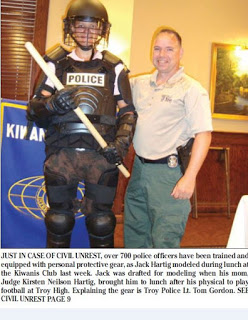

| Not a scene from "Red Dawn": Local police in Ahaheim, California. |

When he gazes into the mirror, Lubbock County Judge Tom Head apparently sees the Lone Star State’s equivalent of the Roman military hero Horatius, or perhaps Wang Weilin, the “Tank Man” of Tiananmen Square.
During a recent interview with the local Fox affiliate, Judge Head was asked to explain his support for a proposed county tax increase. The money would be spent to hire additional deputies and to provide pay increases for the District Attorney and his staff – which is to say that it would help fortify the county government’s mechanism of regimentation and wealth extraction. In what may have been a moment of manic improvisation, Head insisted that the tax increase would be necessary in order to fortify the county in the event Barack Obama deployed UN peacekeepers to subdue Lubbock County.

“He's going to try to hand over the sovereignty of the United States to the UN,” Head declared. When that happens, predicted the judge, we will witness “civil unrest, civil disobedience, civil war maybe. And we're not just talking a few riots here and demonstrations, we're talking Lexington, Concord, take up arms and get rid of the guy.”
When faced with growing rebellion, Obama “will send in UN troops,” Head predicted. But fear not, beleaguered residents of Lubbock County, for Judge Head was rendered from the same mold used to produce the Alamo’s intrepid defenders. So it will be that when Obama swears by the nine gods and names his trysting day, Head will be there to hold the bridge against the heathen hordes.
“I don’t want ‘em in Lubbock County, so I’m going to stand in front of their armored personnel carrier and say 'you're not coming in here!’” Head told an interviewer who was visibly laboring to contain his mirth. “And the sheriff, I’ve already asked him. I said, `You gonna back me?’ and he said, `Yeah, I’ll back you.’ Well, I don’t want a bunch of rookies back there. I want trained, equipped, seasoned veteran officers to back me.”
Although the prospect of a second Obama term is pregnant with potential horrors, we can round down to zero the likelihood that a re-enthroned Barack Obama would dispatch foreign shock troops in blue helmets to pacify Lubbock County. He wouldn’t have to.
During the Cold War, critics of open trade with Soviet Bloc countries would often repeat the truism “Communism will be built with non-Communist hands.” There is a sense in which that expression applies to the Homeland Security State that was inherited by Barack Obama. Regarding the infrastructure of domestic tyranny, “Law and Order” conservatives like Tom Head have every right to tell Obama, “You didn’t build that.”

Head, who has been Lubbock County’s top elected official since 1999, is a former police officer and – more significantly – a former SWAT operator. This means that he is a product of the same system over which Barack Obama now presides. Less than a year before promising to sacrifice his body to prevent federal APCs from violating the sovereign soil of Lubbock County, Head eagerly welcomed a $250,000 Homeland Security grant to purchase a new APC for the county’s SWAT team.
Conservatives haunted by the prospect of a UN-led invasion and occupation of the United States should focus their concerns on their local police department, rather than the tombstone-shaped UN Headquarters Building in New York City. Rather than indulging in fantasies involving blue helmeted foreign troops, they should fasten their attention on the activities of their local SWAT team – which is the local affiliate of a federal apparatus of repression that grew out of two related UN initiatives.
In 1961, the U.S. State Department published a document entitled "Freedom from War: The United States Program for General and Complete Disarmament in a Peaceful World" (also known as Document 7277). In the same year, the UN promulgated its Single Convention on Narcotic Drugs, thereby creating the framework for the global drug prohibition crusade.
| An APC used for traffic enforcement, Wichita Falls, Texas. |

Although obscure and largely ignored, those two documents – and the policies that sprang from them – are directly implicated in the growth and expansion of America’s police state.
In addition to serving as the framework for international arms control policy, “Freedom from War” provided the institutional framework for the militarization of domestic law enforcement. The Single Convention on narcotics supplied the “legal” authority for the war on drugs – thereby providing an infinitely self-sustaining conflict for those troops to fight.
The “Freedom from War” proposal abdumbrated a three-stage program through which the UN would be “progressively strengthened in order to improve its capacity to assure international security and the peaceful settlement of disputes." In this arrangement, UN member states would provide military assets and personnel to a “peace force” controlled by the Security Council. (In practical terms this role is played by the NATO alliance, a regional subsidiary of the UN, supplemented by whatever governments the U.S. can bribe or threaten into joining a “coalition of the willing”).
“Freedom from War” also dictates that each national government would maintain a centralized, militarized “internal security force” that would maintain domestic order on behalf of the incumbent political elite.
What would an “internal security force” look like? Daryl Gates answered that question when he created the first SWAT team in 1968. Although marketed as a special-purpose civilian unit to be employed in hostage situations, armed robberies, and in similar circumstances, SWAT was designed to deal with “crowd control and civil unrest,” according to police historian (and former LAPD Officer) Glynn Martin. That is to say that SWAT teams were always intended to intimidate the public, rather than protect it.
 |
| A Jackbooted Thug in his larval stage. |

Once the legislative support was in place, the Feds lost no time in militarizing narcotics enforcement. In January 1972, Richard Nixon created the Office of Drug Abuse Law Enforcement (ODALE) by executive order. ODALE pooled personnel and resources from more than a half-dozen federal agencies – including the Internal Revenue Service, the Bureau of Narcotics and Dangerous Drugs (a precursor to the DEA) and the Bureau of Alcohol, Tobacco, and Firearms – and given a mandate to “bypass normal channels” in order to crack down on drug possession and trafficking.
The agency drew up a target list of thirty cities and created multi-jurisdictional task forces with state and local police. The task forces were given huge sums of money to hire informants and conduct “controlled buys” of narcotics, and given considerable latitude to engage in wiretapping and other domestic espionage. Local SWAT teams were deployed to serve “no-knock” search warrants.
Freed from the fetters of due process, ODALE went on a rampage that foreshadowed the paramilitary abuses that have now become commonplace. In his book Agency of Fear, Edward J. Epstein recounts an ODALE no-knock raid on the Collinsville, Illinois home of Herbert Giglotto.
Sometime around midnight, Giglotto and his wife heard footsteps on the stairs outside their bedroom.
“I got out of bed; I took three steps, looked down the hall and I [saw] men running up the hall dressed like hippies with pistols, yelling and screeching,” Giglotto recounted. “I turned to my wife. `God, honey, we’re dead.’”
Several of the invaders seized Giglotto, threw him face-down on his bed, and tied his hands behind his back.
“Who is that bitch lying there?” one of them screamed at Giglotto, referring to his terrified wife. Another pressed a loaded gun to Giglotto’s head and told him, “You’re going to die unless you tell us where the stuff is.” After terrorizing the couple and ransacking their home, the intruders realized that they had the wrong address – and left without apology.
“On the same evening in Collinsville, another group of raiders from ODALE kicked in the door of the home of Donald and Virginia Askew, on the north side of town,” narrates Epstein. Virginia, who was crippled from a back injury, fainted. Armed assailants prevented her husband from coming to her aid, and threatened to murder their sixteen-year-old son, Michael, when he tried to phone for help.
During the same Easter week blitzkrieg, the counter-narcotics gestapo raided a farmhouse in Edwardsville, Illinois, and imprisoned John Meiners for seventy-seven hours.
“I was asleep about three A.M. when the agents rushed in and pushed me against the wall,” Meiners related. While one of the thugs held a gun to Meiners’ head, the others smashed walls, shattered windows, and helped themselves to valuables. The victim was then taken to a local police station and held for three days before being released without being charged with a crime.
None of the officials or operatives responsible for ODALE’s Kristallnacht-style rampage was ever punished. The transparent purpose of ODALE was to generate a large number of election year arrests in support of Nixon’s re-election effort through what Epstein called “the continued organization of fear by the White House.” Once its political purpose had been served, the agency was quietly disbanded in June 1973. But during its 18-month existence, ODALE created the template used today by practically every counter-narcotics task force in the country.
During the administration of Ronald Reagan – who, as we have recently learned, was an FBI asset for most of his adult life – the war on drugs was dramatically escalated. The Posse Comitatus statute was perforated with exceptions permitting the Pentagon – working through various Joint Task Forces -- to provide training and equipment to SWAT teams and to carry out a limited number of domestic counter-narcotics operations.
In fact, any law enforcement mission could become a fully militarized operation if it could be packaged as counter-narcotics initiative. The February 1993 federal assault on Waco’s Branch Davidian sect was militarized after Texas Governor Ann Richards – citing a bogus claim that the Davidians were operating a meth lab – claimed that the investigation involved a “drug nexus.” This permitted the ATF to receive training and material assistance from the Army’s Joint Task Force Six in planning and carrying out its attack on what was characterized as “a dangerous extremist organization.”
Three years after her “Justice” Department had annihilated scores of people at Waco, Attorney General Janet Reno inaugurated the Pentagon's Law Enforcement Support Organization (LESO), through which police departments can have access to military hardware of any description on the assumption that each police department is “a DoD organization.” What this means, of course, is that if your “local” police is part of the LESO framework, it is – in everything but name – an appendage of the Pentagon.
This is precisely the arrangement called for in the “Freedom from War” proposal.
By the end of the 1990s, U.S. military participation in UN-mandated “peacekeeping” and “peace enforcement” missions had become commonplace. While U.S. military personnel were being deployed as police overseas, American police departments were increasingly behaving like occupying armies.
One suitable example is provided by the Fresno, California Police Department’s Violent Crime Suppression Unit (VCSU). Beginning in 1994, the VCSU – which described itself as the department’s “special forces” branch – conducted street patrols in the city’s impoverished suburbs. Officers assigned to the unit wore military garb and toted military-grade, fully automatic weapons. The unit was backed with two helicopters equipped with infrared sensors, and a Pentagon-provided Armored Personnel Carrier.
Rather than investigating crimes and arresting suspects, the VCSU conducted what the military calls “contact patrols” – that is, they would descend on a targeted neighborhood “like a wolf pack” (to use the department’s description) and see what trouble they could stir up.
“`Contacts’ generally involve swooping onto street corners, forcing pedestrians to the ground, searching them, running warrant checks, taking photos, and entering all the new `intelligence’ into a state database from computer terminals in each patrol car,” recalled crime reporter Christian Parenti in his book Lockdown America: Police and Prisons in the Age of Crisis. Every neighborhood was considered a “war zone,” and all of the inhabitants therein were treated as “enemy combatants.”
“If you’re 21, male, living in one of these neighborhoods, and you’re not in our computer, then there’s definitely something wrong,” insisted VCSU officer Paul Boyer. From that perspective, your absence from the database wouldn’t reflect the fact that you’re an innocent person, but rather that you’re a particularly devious “enemy combatant” who had eluded detection.
| "Amerika" -- the fictional version, circa 1986. |

The VCSU would often take part in joint paramilitary operations with the FBI, DEA, and the San Francisco Police Department. Those raids were not conducted pursuant to warrants or probable cause regarding specific crimes, but rather to intimidate suspected gang members.
Each of them was a “Shock and Awe”-style display of military superiority by the local occupation authority.
“I feel bad for the innocent women and children that were here,” stated SFPD narcotics lieutenant Kitt Crenshaw after a nighttime military raid terrorized an apartment complex and netted a minuscule amount of marijuana, “but in a way they do bear some responsibility for harboring drug dealers.”
The police agencies involved in these raids referred to their approach as “clear and hold” – a phrase that would later be employed by U.S. military personnel conducting occupation missions in Iraq, Afghanistan, and elsewhere. Remember: This was taking place in the United States of America before the 9/11 attacks, the creation of the Department of Homeland Security.
A propaganda video produced by the Kansas City Police Department unwittingly illustrates just how thoroughly militarized domestic law enforcement has become.
The clip begins with an on-screen narration by what appears to be a heavily tranquilized female officer, who soothingly explains that when tactical teams – that is, military units in black body armor – serve search warrants, the element of surprise is important “for the safety of everyone.” This does prove traumatic “not only for occupants of the house, but for neighbors as well,” she continues. This is why post-raid neighborhood outreach by the stormtroopers is now standard procedure.
“Anytime we’re going to kick in a house like this, we’ve got kids in the neighborhood … and it kind of resembles a military operation,” explains Sgt. Chip Huth, displaying his singular command of the obvious. What he's describing is a military operation, an example of what the Pentagon calls “operations other than war.”
According to Sgt. Huth, “We have to establish objective peace before we can move on to any community-building peace.” This is the language of military occupation: Pacify a targeted neighborhood, then try to win the “hearts and minds” of residents.
| "Amerika" -- the real deal, Troy, Michigan, 2012. |

Conservatives of Tom Head’s vintage probably remember the mid-1980s ABC miniseries Amerika, which depicted a prostrate United States after being conquered and occupied by the Soviet Union. Internal order was maintained by black-clad UN “peacekeepers” whose attire – and conduct – make them indistinguishable from the shock troops that are frequently deployed by most “local” police departments today.
Judge Head’s cynical, self-dramatizing promise to hold the bridge against a UN invasion of Lubbock County offers an insipid, but unmistakable, echo to Garet Garrett’s famous lament:
“There are those who still think they are holding the pass against a revolution that may be coming up the road. But they are gazing in the wrong direction. The revolution is behind them.”
Dum spiro, pugno!
13 comments:
I just looked up UN Doc 7277, I haven't read it completely yet, just skimmed it really but holy false flags BatMan.. from what I gather so far.. is that this has been the UN's agenda all along, (using taxpayers' $$$ to do so thru the FedRes).. And Here We Are.. They've Done It!..
The UN can claim victory for once..
It can't stop mass genocide in Darfur, or even Kosovo, it couldn't/can't stop the Israeli/Palestinian conflicts throughout its entire history..
But it has succeeded in dismantling our Constitution & The People's Civil Rights..
Bravo!
One Success is better than None I guess..
Wife says: "More!? You're reading articles that say the same thing,... over and over."
My response:
"It's better to know all about the bastards than to be clueless."
Then I thought, Shhi... we're surrounded by a vampire People who love death and destruction more than their own families and children.
What's wrong with these People?
Can't they see?
And wait,... aren't most of them "Christians"?
... Maybe the word "Christian" means something else these days? I don't know.
Same as it ever was?
I DO know this: Will Grigg is heroic for pointing this cr... sh... stuff out in a civilized way. [I feel bad about not sending him my entire treasure to support opening eyes,... but I think every eye that can be opened has been opened. ... I pray I'm wrong.]
There is so little civilization these days... I don't know how those bully-thug bastards can look at themselves in the mirror everyday. ... But then, I'm not a sociopath like they are, so there's no way I could ever understand.
I think I'm going to approach life as if I were living on Mars, because that's exactly how it seems these days - nothing is real - just about Everything(!) is fake and a lie... that's what America is all about. ... A nation of posuers,... a howwlowed shell of itself,... the old fable called "America" is no longer,... if it ever was.
"Not that all that means anything to anyone" - said the tiny speck of dust to the whorlwind.
- clark
"Maybe the word "Christian" means something else these days?"
We may be deceived but He is not:
Hebrews 13:8
Jesus Christ the same yesterday, and to day, and for ever.
God himself intends us to be free:
2 Corinthians 3:17
Now the Lord is that Spirit: and where the Spirit of the Lord is, there is liberty.
As Grigg continues to document in his writings, the signs are full, but as hard
as they try they will never win.
Luke 21:28
And when these things begin to come to pass, then look up, and lift up your heads; for your redemption draweth nigh.
The tragedy in all of this is that no matter how many times they fail,
the keep trying to lock us up.
Their resistance is futile.
Wow! Will, you've done it again. Many of those pictures I've seen before elsewhere, and so they don't come as a surprise to me anymore, but they're depressing none the less.
What really gets my goat is the fact that here we have these idiots in "high places" who, in the midst of their totalitarian delusions, actually show their hand with a straight face no less.
I mean, seriously, who in the hell cares about the UN when the 800 pound gorilla, armed and wearing his full combat gear, has a gun already pointed at your head?!
Does anybody seriously think that the people who have and are being violated daily by the fed and local cops are worried about "blue" hats? That's insanely absurd!
Ahh Red Dawn...there is a corn studded turd remake of that coming out this fall. It was remade with North Korea (LOL!) instead of China being the invaders. The trojan horse already unloaded, the fifth column is already here. They don't wear blue helmets they wear suits and practice law. Betcha the judge gets an irs audit notice soon.
Proof the 'War on Drugs' was intended for purposes other than the eradication of illicit drugs in the US?
In Epstein's 'Agency of Fear' there's this quote: "As long as President Nixon could focus the attention of Congress and the press on the "menace" of heroin addiction destroying America... " Ah yes, behind Nixon's executive order creating ODALE was the 'scurge' of heroin which the public was told, must be eliminated from the land (or else 10 year olds would soon be shooting up in their school's restroom) thanks to Nixon's farsighted thinking.
And what of heroin today? Many Americans don't know it yet (the media hasn't yet been ordered to report it in hyperventilating details) but the US is awash in Afghani white and Mexican brown tar heroin. It is again extremely inexpensive and it is ubiquitous.
So 40 years after Nixon broke the rules to create this ultra-militarized force advertised to deal a death blow to heroin, heroin is again the drug of choice for the young (and for those who were prescribed opiates by their doctors years ago for pain and then recently informed by the same doctors that the FEDS don't like Rx opiates and therefore they won't renew prescriptions... but that's a somewhat different story).
As the movie stated, It's a Mad Mad Mad Mad World.
As the movie did not state, the Psychos run it.
Militarized cops/the military performing law enforcement equals the Standing Army the founding fathers feared.
What is really bizarre is that the Third Amendment, long thought to be an anachronism, might even become relevant again!
And all the sheeple say "*YAWN* What time does Dancing With the Stars come on?"
@willb1:
"2 Corinthians 3:17
Now the Lord is that Spirit: and where the Spirit of the Lord is, there is liberty."
I needed to hear that. All this bad news and terrible things portending on the horizon, it's enough to make me want to slit my wrists. I don't fly(TSA). I don't talk to anyone about what I read. It's refreshing to remember that although I'm not free in this country, there is a freedom of spirit that can only be granted by the Spirit of God. I'm serious! I'm feeling better already. Faith comes by hearing and hearing by the word of God. Thanks.
William, I've come to expect quite a lot from you, but you hit it out of the park this time. I also expect there is aleady a drone with your nme on it. I hope you don't give up the fight any time soon and go underground. Not that it would do any good. Keep them coming.
A fan.
When I lived in San Diego Ca. in the 1980's, Police chief Bill Kolander went to Israel for "training". Over the rest of the 90's many of our US police chief went for "training". Welcome to the NWO.
@CR106
Those who work against our liberty are the true slaves of this world:
2 Peter 2:19
While they promise them liberty, they themselves are the servants of corruption:
for of whom a man is overcome, of the same is he brought in bondage.
Keep Mr. Grigg and his family in your prayer.
Thanks wiilb for the above Biblical quote. I, in all honesty, am not much of a Bible reader, but I find that to be one of the best passages I've had the pleasure of reading.
Post a Comment